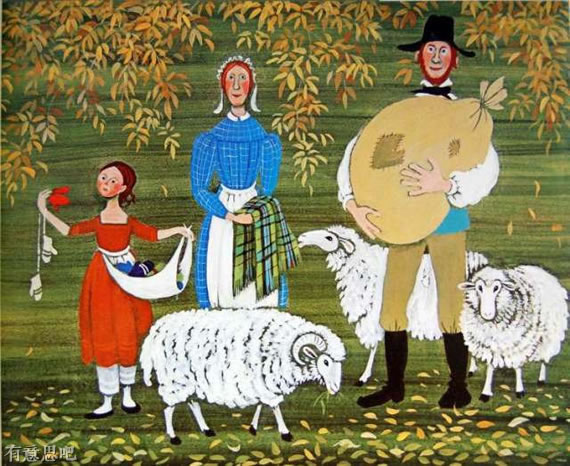
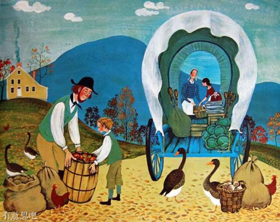
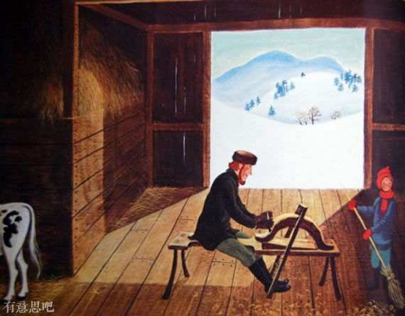
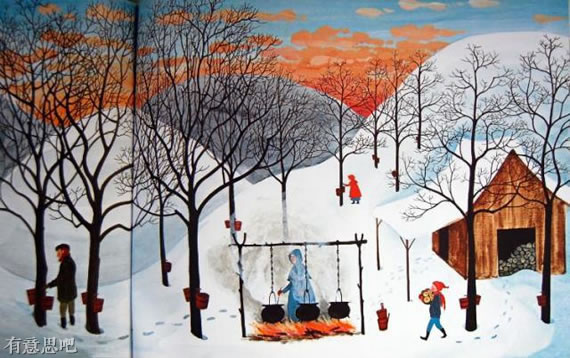

赶牛车的人
 简朴、互助、勤奋的生活，在四季更迭中感受诗意、
温情、美好的生活方式，享受生命的从容与静美!
简朴、互助、勤奋的生活，在四季更迭中感受诗意、
温情、美好的生活方式，享受生命的从容与静美!
 十月里，他把牛儿套上车，
再和全家人一起把车装满
装上一年来家里做的、地里种的
余下来的每一样东西。
十月里，他把牛儿套上车，
再和全家人一起把车装满
装上一年来家里做的、地里种的
余下来的每一样东西。

他装上了一袋羊毛， 四月里从羊身上剪下来的毛。
他装上了一个妻子用织机织的披肩， 披肩用的是纺车纺出来的线， 线用的是四月里从羊身上剪下来的毛。
他装上了五双女儿织的手套， 手套用的是纺车纺出来的线， 线用的是四月里从羊身上剪下来的毛。
他装上了全家人一起做的蜡烛。 他装上了用自家种的亚麻织成的布。 他装上了亲手劈的木瓦片。 他装上了儿子用借来的厨刀削成的桦木条扫把。 
他装上了他们从菜园里挖来的土豆 ——先留够一冬天吃的和来年播种用的。 他装上了一木捅苹果 蜂蜜和蜂窝 圆白菜和萝卜 一木箱枫糖—— 三月里从枫树上采树液， 熬啊熬啊熬成了浆。 他装上了一袋鹅毛， 孩子们从谷仓旁捡来的鹅毛。
牛车装满了，他挥手告别了妻子 女儿和儿子。 他在牛车前头走，一直走了十天，
翻过山坡，越过山谷，沿着小溪边， 穿过农场和村子。
终于到了朴茨茅斯， 到了朴茨茅斯大市场。
他卖掉了那袋羊毛。 他卖掉了妻子织的披肩。 他卖掉了五双手套。 他卖掉了蜡烛和木瓦片。 他卖掉了桦木条扫把。 他卖掉了土豆。 他卖掉了苹果。 他卖掉了蜂蜜和蜂窝 圆白菜和萝卜。 他卖掉了枫糖。 他卖掉了一袋鹅毛。
然后，他卖掉了装枫糖的木箱。 然后，他卖掉了装苹果的木桶。 然后，他卖掉了装土豆的袋子。 然后，他卖掉了他的牛车。
然后，他卖掉了他的牛，亲了亲牛鼻子说再见。 然后，他卖掉了牛轭和缰绳。
带着满口袋的钱，他逛遍了朴茨茅斯大市场。
他买了一只铁壶，好架在家里的炉火上。 他给女儿买了一根绣花针， 针从港口的船上买， 船从很远很远的英国来。 他给儿子买了一把小折刀， 用来削桦木条扫把。 他给全家人买了两磅冬青薄荷糖。
他把绣花针、小折刀和冬青薄荷糖装进壶， 把壶挑在棍头，抗在肩膀上， 口袋里装着剩下的钱， 步行朝家走。
穿过农场和村子， 翻过山坡，越过山谷，沿着小溪边。
终于回到了家。 他的儿子、女儿和妻子正在等着他。

他女儿拿走了绣花针，开始缝手套， 他儿子拿走了小折刀，开始削木条， 他们拿了新铁壶烧晚饭， 饭后一人一块冬青薄荷糖， 那天晚上，赶牛车的人就坐在炉火旁， 给牛棚里的小牛 缝制新缰绳。 
一冬天，他都在做新牛轭， 锯木板做新车， 劈木瓦片。
一冬天，他妻子把亚麻纺成布。 一冬天，他女儿在布上绣图案。 一冬天，他儿子在削桦木条扫把。 全家人一起做蜡烛。 
三月里，他们从枫树上采树液， 熬成枫糖浆。
四月里，他们剪羊毛， 纺线，编织。
五月里，他们种圆白菜、土豆和萝卜， 苹果花盛开又飘落， 蜜蜂醒了，开始酿成新蜜，
鹅儿们在谷仓旁嘎嘎叫， 落一地鹅毛软的像白云。